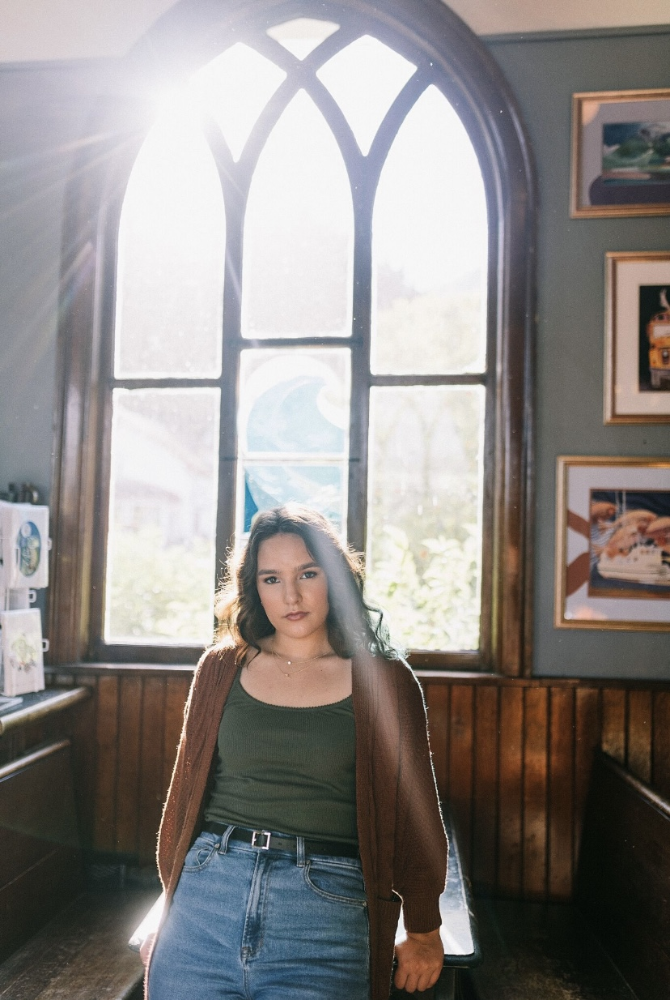
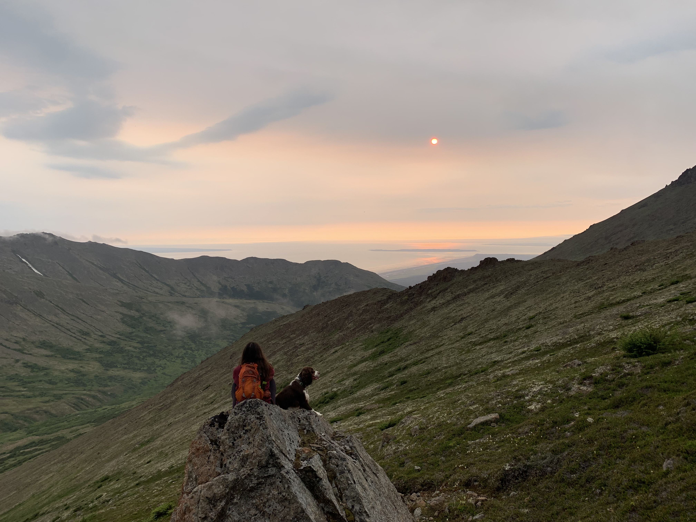
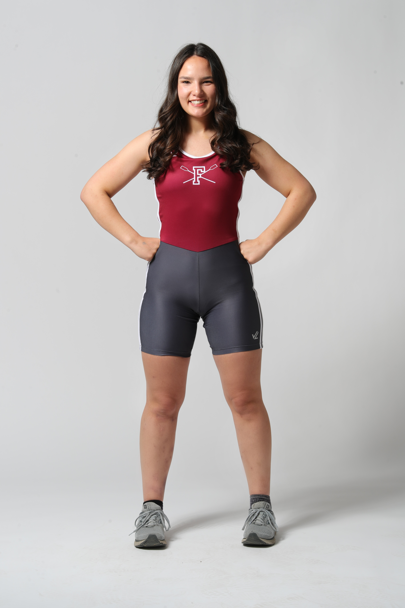

Hello, I am a Junior at Fordham University in NYC majoring in journalism and minoring in Spanish. This website along with the documentary and photos that can be found under the “about” tab are a part of a semester-long project I have done for a digital production class. More information about the content of the documentary can also be found there. I don't know what bowels of the internet you came from to find this website, but welcome!



In the interest of fairness, cause why would you watch a documentary by some random college student? I am going to tell you a little bit about myself, so it's almost like we're friends. I was born and raised in Alaska (yes it's cold, no it is not ALWAYS dark), I am a sagittarius, and I am the youngest of four siblings. In my free time I love spending time with my friends, reading, and running. I also am a part of my university's rowing team which takes up much of my free time, but has been an incredibly rewarding experience. That's the basic information about me, but if you would like to reach out my email can be found under the “contact” tab.